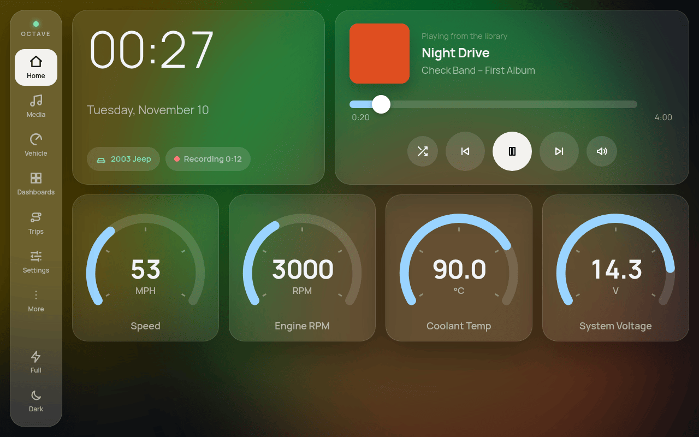

OCTAVE's screen is replaceable. These frontends drive the same backend as the built-in QML UI, over the service API, each in a different language and style. Try the web ones in your browser, copy any of them (MIT), or add your own.
Try One Now
The frontend playground runs a web frontend against the real OCTAVE core (compiled to WebAssembly) and a simulated car, in your browser, with nothing to install. The car's own screen runs next to it, so you can watch both follow the same engine. Any web frontend loads with playground.html?frontend=<url>, so a link is enough to show yours.
The native ones run against any OCTAVE release with octave --headless --sim (a simulated car, no window). Install one as the car's screen from Settings > Device > Frontends, and press Try: the built-in screen comes back after two minutes, or at any time when you press mute five times within four seconds (details).
Example Frontends
Five complete frontends, written to prove that everything the built-in UI does is reachable over the API (feature by feature). They live in examples/frontends/, MIT licensed, and examples/frontends/check_all.sh runs each one's tests against a simulated car.

Glass
TypeScript + Svelte 5 · web
A frosted-glass tablet UI, light and dark. Aims at everything the QML app does: media and the library, OBD and trouble codes, dashboards drawn from their JSON specs, trips, settings, phone mirroring over WebCodecs.
Brutalist black on white, readable in direct sun, with an inverted night mode. Drive readouts, every saved dashboard drawn from its spec, trouble codes, trips, media with the cover.
A 1980s vacuum-fluorescent instrument cluster. Driving gauges, every PID, trouble codes, trips, a spectrum analyzer and media with a dot-matrix cover. Its link.rs is the smallest complete client in one file.
An 8-bit arcade dashboard: 320×200 pixels scaled up, its own pixel font, 16 colours. Drive readouts, media with a palette-crushed cover, trouble codes. Proof that plain C and a JSON library are enough.
A dense, keyboard-first operator console for a terminal or an SSH session: live data, OBD and trouble codes, trips, the library, dashboards as JSON, every setting, and an API explorer.
The smallest working frontends, under 200 lines each, to copy and grow: they connect, pair when off the head unit, show RPM and speed live, play and pause, and show the cover. Each is checked against the simulated car in CI, so they keep working. In templates/, MIT.
Hello, car (JavaScript)
plain JavaScript · web, no bundler
One HTML page and a 60-line client. Served by OCTAVE itself with --web-root, or installed as the screen.
Frontends other people have made. Find more on GitHub under the topic octave-frontend.
Frontend
By
Language / toolkit
Kind
Links
None yet: yours could be the first. See below.
Add Yours
Build it. Start from a template and Writing a Frontend. Any language, any toolkit, any license: the SDKs and templates are MIT, and a frontend that talks over the service protocol is your own program (Your Frontend, Your License).
Make it installable. Add an octave-frontend.json asking only for the permissions it uses (Installing Your Frontend). For a frontend on a car's screen, follow the checklist below.
Publish it in a public repository with the GitHub topic octave-frontend and a screenshot in its README. A web frontend on GitHub Pages runs in the playground straight away: link https://robdegeorge.com/OCTAVE/playground.html?frontend=https://you.github.io/your-frontend/.
Tell us. Open a Show your frontend issue, or a pull request adding a row to the table above. If the API is missing something you need, open an API request: new members land as experimental first, so they can come quickly.
A Frontend for a Car's Screen
Readable at a glance: large values, high contrast, nothing that needs reading twice. Touch targets of at least 48 px (about 9 mm); no hover-only controls.
Volume and mute always one tap away (volumeController.applyVolume, toggleMute), and the user's theme where you can (themeCatalog.activeTheme).
Show critical values whatever page is open (coolant, oil pressure, voltage: parameterCatalog and the alert limits).
Ask only for the PIDs on screen (obdManager.setParameterDemand), and release them when the page goes; the car's bus is shared.
Don't use five quick mute presses for anything: that is the way back to the built-in screen. During a trial, show frontendManager.trialSecondsLeft and offer Keep this screen (keepTrial()).
Survive the service going away and coming back (reconnect with back-off) and an unknown later protocol version (say so; don't crash).